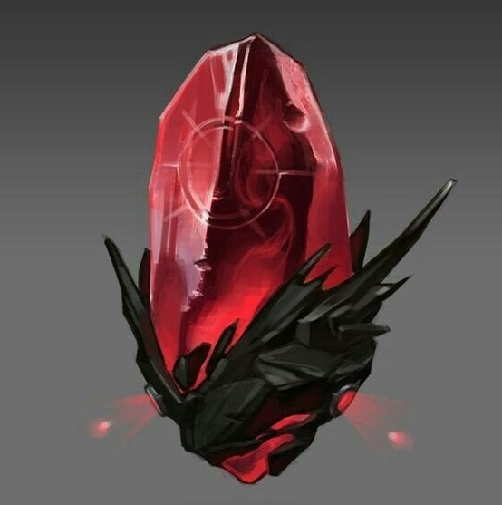
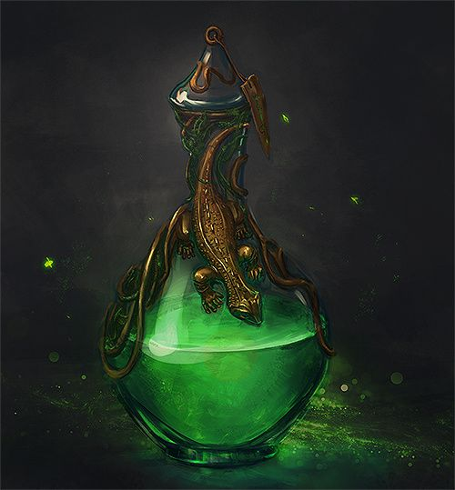
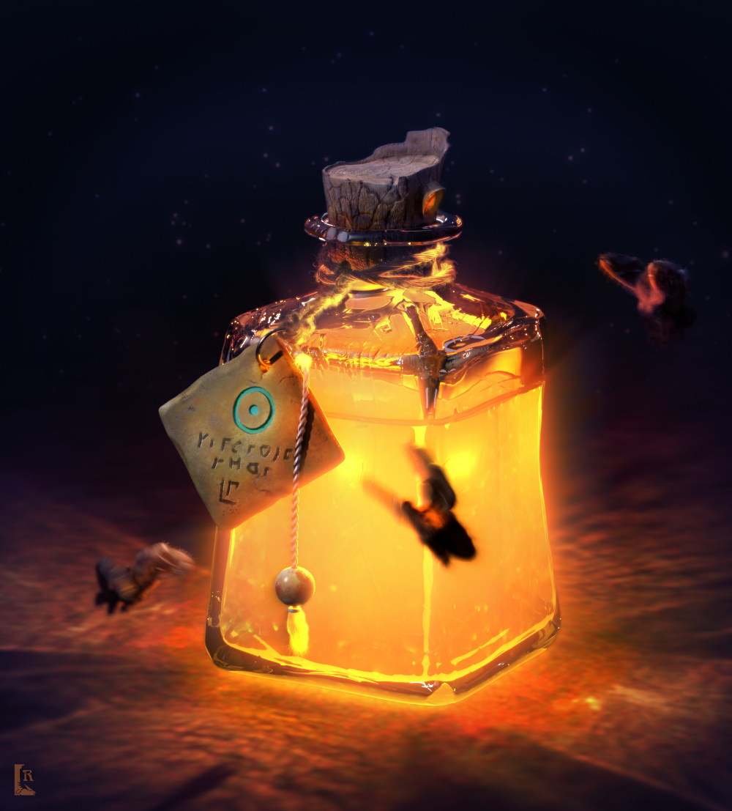
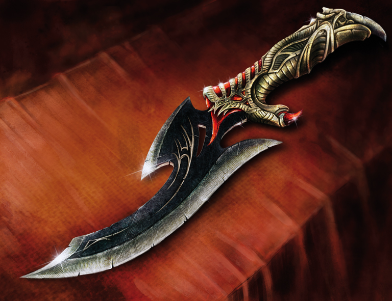
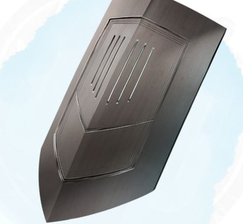
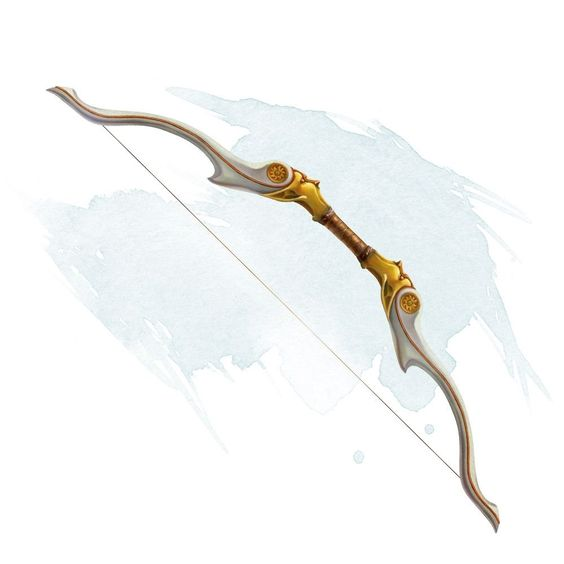
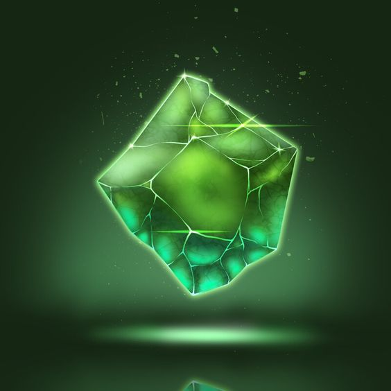
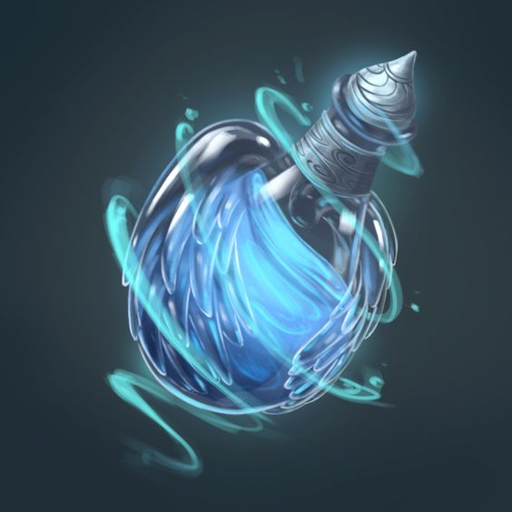

MERCADO DE UTENSILIOS DERIVADOS
Runa de Teleporte

500 moedas de ouro
Uma pequena pedra que tem a habilidade de cravar uma runa magica ao riscar qualquer superficie com ela. Após riscar algum local, você podera se teleportar para ele de qualquer distância (Apenas um local pode ser riscado por vez).
Poção de Regeneração

70 moedas de ouro
Uma poção que possibilita a quem usa-la uma regeneração de nivel G (essa regeneração dura 3 turnos).
Poção de Resistência ao Fogo

110 moedas de ouro
Poção que da ao usuario resistência ao fogo comum, sendo ele fogo manipulado, fogo de incendios e etc (dura 5 turnos).
Adaga Venenosa

50 moedas de ouro
Essa adaga da a habilidade de envenenamento ao portador, qualquer inimigo que ele cortar pode ser ou não envenenado por ele, isso depende da escolha do usuario, o veneno pode gerar dois efeitos "Paralizia" ou "Fraqueza" (Dura 2 turnos).
Escudo Barricada

90 moedas de ouro
Escudo de porte grande que pode ser manuzeado por guerreiros com um alto nivel em força, ele é bom em proteção para ataques fisicos como lançamento de rochas ou golpes de armas. Já contra ataques de energia ou ataques que possam passar por fendas ele não se sai com perfeição.
Arco de Luz

130 moedas de ouro
Um arco que cria suas próprias flechas feitas de pura luz, ele pode ser manuzeado com rapidez e tem um longo alcance, chegando até percorrer 400 metros.
Pedra da Salvação

1.300 moedas de ouro
Essa pedra se ativa no exato momento em que o protador iria levar qualquer tipo de golpe que ocasionaria em sua morte "certa" se desfazendo e lançando o usuario para qualquer lugar do continente com um teleporte impedindo sua morte (Por impedir a morte do personagem o mesmo perde 15% de seus status ao ser salvo da morte certa).
Poção de Voô

150 moedas de ouro
Uma poção que permite quem a tomar ter o poder de voar por onde desejar (O efeito da mesma dura por 4 Turnos).
Novos itens serão disponibilizados em breve!